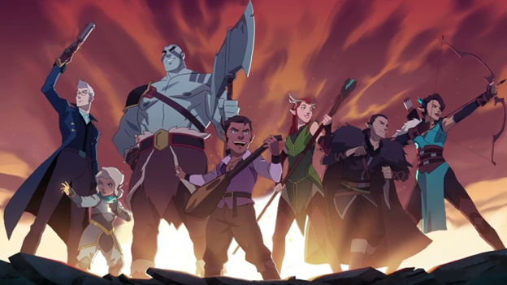
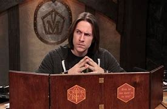
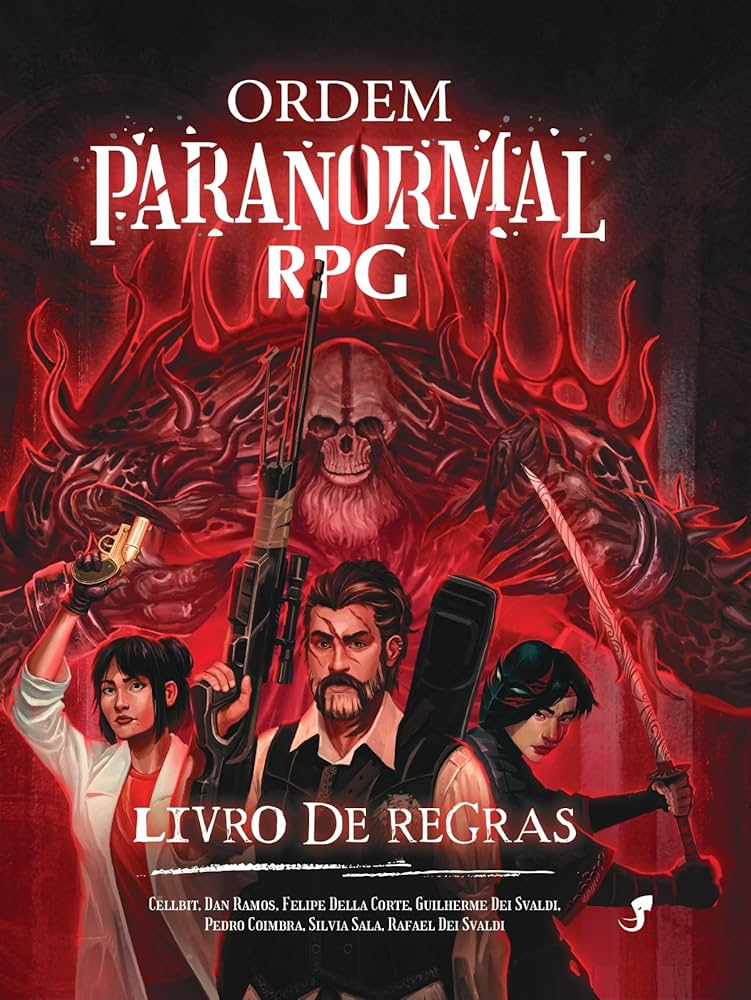

Role Playing Games

O que é RPG?
RPG é um jogo de imaginação e improviso, onde um grupo de amigos criam personagens seguindo as regras de um certo sistema e interpretam eles em uma aventura conduzida pelo mestre.
⠀
Pode parecer confuso no começo, até porque realmente não é o jogo mais fácil de se entender. Diferente da maior parte dos jogos que vemos por aí, o RPG acontece mesmo na imaginação de quem joga, por isso é uma experiencia tão única.
⠀
É quase como ler um livro: tudo que o livro te dá são palavras, quem realmente monta e visualiza o mundo é o leitor com sua capacidade de imaginar. O RPG não é diferente, visto que os jogadores podem fazer o que quiserem (dentro do possivel, é claro), desde criar seus personagens até realizar suas ações.
⠀⠀
O sistema dita as regras desse mundo, com informações para o jogador de como criar o personagem, desde sua aparência e personalidade até grandes tabelas cheias de números para ataques, magias, dano e muitas outras coisas divertidas. Além disso, têm as informações para o mestre, como os inimigos que ele pode usar em sua história, lugares e muito mais.
⠀
O mestre é o corajoso amigo do grupo, que assumiu a responsabilidade de criar a história, fazer o mapa, arbitrar regras e principalmente descrever tudo que acontece em volta dos jogadores. Como o RPG é um jogo imaginativo, palavras são necessárias para que nossa imaginação consiga agir. O encarregado disso, das descrições e dialogos, é o mestre.
⠀
Talvez você possa estar pensando “mas se o mestre pensa a história, como os jogadores têm liberdade para fazer o que quiserem?” e é aí que entra a parte do improviso do jogo, tanto dos jogadores como do mestre.
⠀
Todo bom mestre sabe que é impossível prever e controlar seus jogadores, vão ter horas que o mestre verá seu planejamento literalmente em chamas. Como sair de uma situação como essa? Agir naturalmente e fingir que tudo está acontecendo como planejado, improvisar e se reinventar. Nada se compara a experiencia de ser mestre.
⠀
Mas e os dados? Os famosos dados... Bom, eles são nada mais que a pitada de sorte que toda boa aventura precisa. Quanto maior o número tirado no dado, maior a chance de sucesso de uma ação. RPG é um jogo em que todos podem fazer o que quiserem, mas para ter sucesso é necessário ir bem no dado. O mesmo vale para os personagens que o mestre controla.
⠀
História
Tudo começou há muito tempo, numa terra muito, muito distante. Para ser mais preciso, em 1974 nos Estados Unidos com o lançamento do lendário Dungeons & Dragons criado por Gary Gygax e Dave Arnson, o primeiro sistema de RPG. Dizem as lendas que a ideia do RPG surgiu quando Gygax e Arnson estavam jogando um jogo de peças e miniaturas chamado War Games.
⠀
Diferente do RPG, esse jogo consistia em fazer grandes batalhas de exércitos, sem a parte da interpretação. Quando um dos dois disse que era impossível invadir sua fortaleza, surgiu a ideia de três aventureiros tentando se infiltrar no local pelas masmorras, passando despercebidos pelo grande exército.
⠀
Não podemos afirmar com certeza se essa história realmente aconteceu, mas como todo bom mundo de RPG, fatos viram histórias, histórias viram lendas e lendas viram mitos. Desde então, diversas edições de Dungeons & Dragons foram lançadas, a última sendo a quinta.
⠀
Não podemos esquecer os vários outros sistemas de RPG que vieram depois, se destacando por uma temática diferenciada. Alguns focam em cenários futurísticos, outros terror, alguns até mesmo velho oeste. Existem sistemas de RPG para todo tipo de mundo, personagem e história, permitindo que as aventuras já ilimitadas e imprevisíveis sejam ainda mais diversificadas. A única barreira que o RPG enfrenta é a nossa própria imaginação.
Alguns Sistemas Famosos
Ordem Paranormal
O Som das Seis

Tormenta 20
Campanhas Funcionais
Ordem Paranormal - Campanhas
The Legend of Vox Machina
Nerdcast RPG